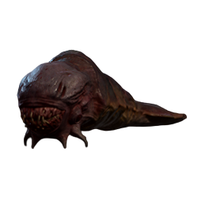
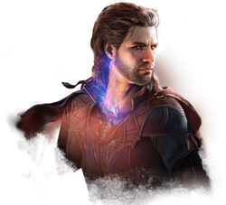
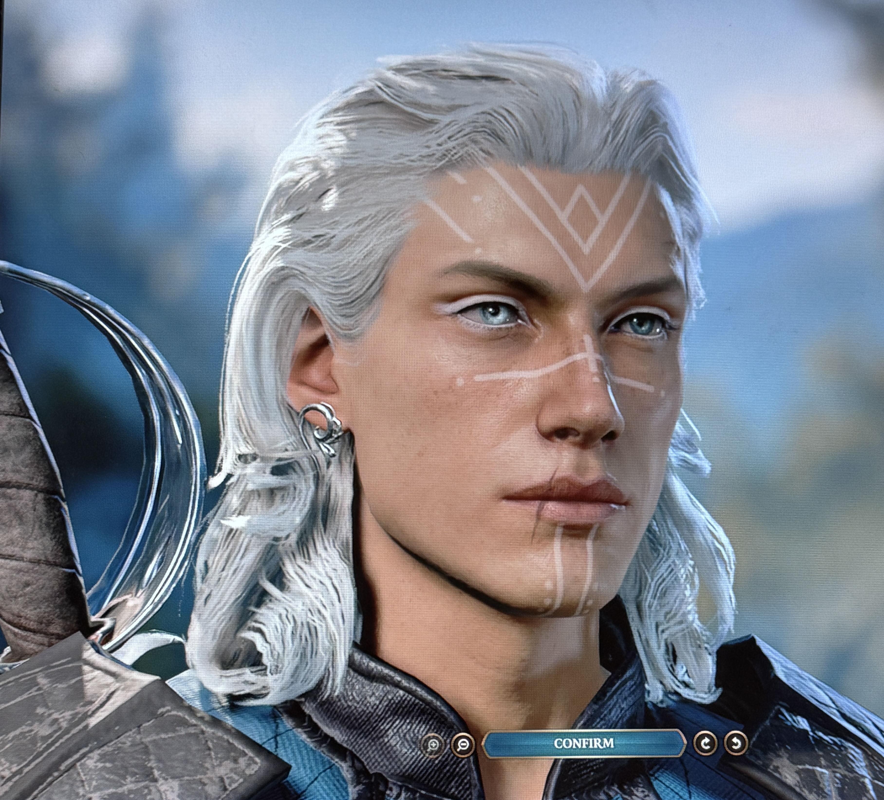

Baldur's Gate 3 A Dungeons and Dragons open-world, choose your own ending, adventure game.
Baldur's Gate 3, also known as BG3, is one of my favorite games for many reasons. From its gam layout to its storytelling, it never gets
old. When I say "it never gets old," I mean it. I have 3 run-throughs going right now at different stages of the game. The reason it's able to do
that is because of its millions of paths that can occur. Paths/responses don't just get formed based on what you respond with, who you talk to
or who you decide to keep alive or not, but also many other factors. Those factors being: what race you pick, sometimes even what subrace you pick,
what class and subclass you pick, and what you roll on the dice. That's what makes the game so fun, no matter how many times it's played.
Here is a video of the dice roll mechanism
An actual summary found on the BG3 wiki fandom page says, "Gather your party and return to the Forgotten Realms in a tale of fellowship and betrayal, sacrifice and survival, and the lure of absolute power.
Mysterious abilities are awakening inside you, drawn from a mind flayer parasite planted in your brain. Resist, and turn darkness against itself. Or embrace corruption, and become ultimate evil." (Bg3, Wiki)
There are many ways to play out this scenario, you can either 100% resist the mind flare parasite tadpole's motives, or embrace it and use it for good or evil.
This is what the parasite tadpole looks like.

After making your character and your guardian, the game starts with you waking up in a pod that opens and you climb out.
You find yourself on the Nautilod Ship.
Characters The game has six characters you will meet on the way that can become part of your team.
You also have the option to leave them behind, though it's best to bring them on your adventure as they can be helpful.
Below you will learn about each character with my description of them, what they look like, and be able to hear what
they sound like with audios of their greeting
Lea'zel Lae'zel is the first character that you meet on the ship. She is a Githyanki, and her class is a fighter.
Lea'zel is very stern and always wants to stay on track. She doesn't 100% trust you, or really anyone.
She's more likely to trust you if you made your character also a Githyanki.
Shadowheart Shadowheart is the second possible member you come across. We find her in one of the pods in the Nautilod. You can choose to leave her
or save her. If you save her, she becomes a member of your team. Shadowheart isa half-elf and her class is a Cleric. She is stern but not as much
as Leaz'el is. She is more serious and a bit suspisous with the weird item of hers.
Astarion Astarion is a tricky one; he has many secrets and tricks. He is a high elf and his class is a Rogue, so he's sneaky. Astarion is known for his sassy attitude,
which comes with some flirtatious actions and words. He likes it when the player character makes devious decisions. Though be careful because he has quite a secret.
Gale

Gale is quite a silly guy. He's a human with his class being a Wizard. Though sometimes you may question how skilled he is in magic, as when you first meet him, his
hand is sticking out of a portal and he needs help as hes some how stuck in it. He's a kind guy and can be quite fun to talk to because of how strange he is. Though Gale
has a secret too, and a very strange one at that.
Wyll Wyll, otherwise known as "The Blade of Frontiers," is a Warlock human that you help fight off goblins that are attacking outside of the gates of "The Grove."
Wyll teaches kids how to fight, especially with a sword, as that's one of his specialties. He is pretty normal for a guy, except he is hunting a "demon" for his patron.
Karlach Karlach is this said "demon" Wyll is hunting. Though shes not actually a demon, she is a Tiefling that glows and is very hot to the touch. This is because her "boss" put
an infernal engine in her chest in place of her heart, to make her more powerful. Karlach's class is Barbarian. She is a nice woman, but if you mess with her, she will show
you her full strength. So its safe to say don't get on Karlach's bad side, and if you do, maybe sleep with one eye open.
Scratch Although Scratch isn't one of the main characters you can play, you do have a chance to have him as a companion.
You find Scratch with his sadly deceased owner in the outdoors on your journey. He may act angry or sad towards you, but if you choose your options correctly,
Scratch will become your group's dog. He hangs out at camp, and you can interact with him by throwing his ball or petting him.
He is just a good boy who gives you a serotonin boost when you need it, like right after a fight or just after a long day.
You can get another compainion if you make the right choices, though I wont give to much away on what the companion is.
Yes, it is nice to have these characters around, though some decisions can be made where not all join your group. Along your journey,
you will come across many NPCS some will be enemies, some will be friendly, though all can be either, depending on whether you decide
to be friendly or not towards them. Sometimes you may have to act friendly to get what you want, though most of the time it's either an enemy or an ally.
Also you do have select NPC's sometimes hang out in your camp depending on their needs. I can name some of the NPCS/campaigns you
can have a chance of having visit your camp, depending on your choices. I will name four out of the many: Withers, an undead character who can help you change classes and bring a team member back to life
with a price, of course. Alfira, a Tiefling bard, we see her at camp for the celbration of saving Halsin's party.
There's Halsin, who can be at your camp during and after the party if you decide to save and help him.
Last but not least, Volo, another bard who hangs out at your camp after you save him. Again, this is only four of the many NPCS you come
across and have visited your camp.
Baldur's Gate 3 and Its Elements Baldur's Gate 3 has many elements that connect to what we have learned, and it has so many elements im going to have to only pick a few, or we will be here all day.
One element about the game I want to focus on is all the decisions we have to make. This connects with Sigmund Freud's paper. In the game, yes, we have our group and its
members, but if you are playing by yourself and not with friends, we only have ourselves to decide what's right to do or say. This game can be challenging because a decision you make
can cause an outcome you don't like. For example, in the game, there is a Tiefling child who is being yelled at and called a theif by the place holder Druid leader Kagha. When you talk with
Kagha, you have some spoken lines that help the girl or that can not help the girl. If you make a decsion tht accidently keeps the child in trouble, but you wanted her to be released, you feel the
pain of the mistake you made. Now this game lets you save alot so some people will go to their next save to avoid that mistake like it never happened, which connects with Freud's
research. The person going to the last save is like when we experience trauma, and our brain replays a scenario over and over so we master it and can avoid that trauma again.
When someone goes to their last save, they do so, and it puts the player right before the unwanted outcome happened. This especially happens when a battle isn't going well, and you aren't winning.
Trust me, I won't be lying when I say Ive been guilty of doing this even though I really don't like doing so.
Another element I want to focus on is the graphics. The game is 3D and pretty realistic, from the environment to the animals and people. This goes well with Lanca's Mirror,
because it has so much reality to it that I feel like I'm there, even though the game is third-person view, I still am "me", I make the decisions on what to say to people.
I feel the frustration, worry, and stress of a fight. If a person I talk to is angry at me, even if I didnt do anything,g I feel it and feel my emotions. I am the character I made,
I feel this because the game is based of D&D, a game where you put yourself into a fantasy world where you talk, and do things in your characters shoes. When they are hurt,
you may not feel that pain, but you can imagine it, or if in this game, then you can see it, even if you aren't feeling the physical pain. In Baldur's Gate 3, you mirror your
character or the member you are playing and how they feel and how they are going to react, or even what path they are going to take next.
Favorite Things One of my Favorite things about thisgame is its sound effects and music, especially the title screen's music. You can listen to it here.
Title screen music Another favorite of mine is the character designing. There is tons on tons of ways to make your character.
You pick your class, and race along with how you look, from hair to tattoos, accesories and many more things
Here is a video from _____ on them making there charcter
(Link code and credit here)
Here is the character I made for my recent run through of the game.
 Character making doesn't just stop there; throughout the game, you can buy, be gifted, take, or find more clothing as you play, which adds more customization. Also, at the camp,
you can use the mirror to edit your features too, especially if you want to show character growth/changes as the game goes on.
Those are only two of my favorite things about the game. It gives you a lot to work with to make every player's experience different.
I'm glad you now know about my favorite games and all of their amazing elements that make the game so spectacular!
Sources/Citations Bg3.Wiki. “Baldur’s Gate 3 - bg3.wiki.” Baldur’s Gate 3 Wiki, 21 Dec. 2025, bg3.wiki/wiki/Baldur%27s_Gate_3.
For all images of the charcters besides mine were from the Baldur's Gate: BG3 Wiki